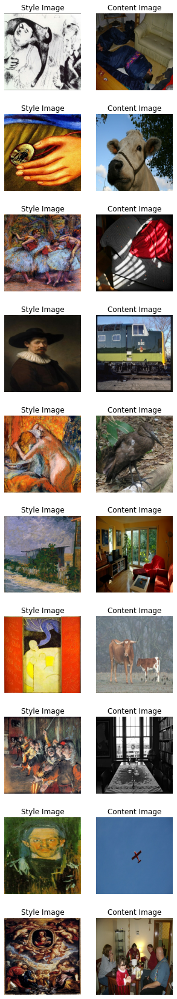
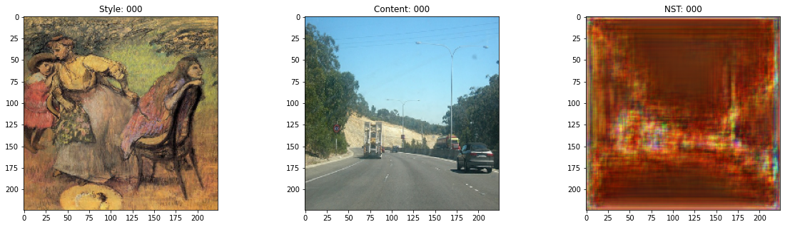
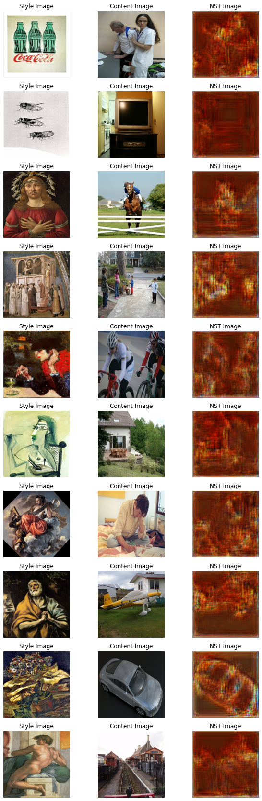

Neural Style Transfer with AdaIN
Author: Aritra Roy Gosthipaty, Ritwik Raha
Date created: 2021/11/08
Last modified: 2021/11/08

Description: Neural Style Transfer with Adaptive Instance Normalization.
Introduction
Neural Style Transfer is the process of transferring the style of one image onto the content of another. This was first introduced in the seminal paper "A Neural Algorithm of Artistic Style" by Gatys et al. A major limitation of the technique proposed in this work is in its runtime, as the algorithm uses a slow iterative optimization process.
Follow-up papers that introduced Batch Normalization, Instance Normalization and Conditional Instance Normalization allowed Style Transfer to be performed in new ways, no longer requiring a slow iterative process.
Following these papers, the authors Xun Huang and Serge Belongie propose Adaptive Instance Normalization (AdaIN), which allows arbitrary style transfer in real time.
In this example we implement Adaptive Instance Normalization for Neural Style Transfer. We show in the below figure the output of our AdaIN model trained for only 30 epochs.

You can also try out the model with your own images with this Hugging Face demo.
Setup
We begin with importing the necessary packages. We also set the seed for reproducibility. The global variables are hyperparameters which we can change as we like.
import os
import numpy as np
import tensorflow as tf
from tensorflow import keras
import matplotlib.pyplot as plt
import tensorflow_datasets as tfds
from tensorflow.keras import layers
# Defining the global variables.
IMAGE_SIZE = (224, 224)
BATCH_SIZE = 64
# Training for single epoch for time constraint.
# Please use atleast 30 epochs to see good results.
EPOCHS = 1
AUTOTUNE = tf.data.AUTOTUNE
Style transfer sample gallery
For Neural Style Transfer we need style images and content images. In this example we will use the Best Artworks of All Time as our style dataset and Pascal VOC as our content dataset.
This is a deviation from the original paper implementation by the authors, where they use WIKI-Art as style and MSCOCO as content datasets respectively. We do this to create a minimal yet reproducible example.
Downloading the dataset from Kaggle
The Best Artworks of All Time dataset is hosted on Kaggle and one can easily download it in Colab by following these steps:
- Follow the instructions here in order to obtain your Kaggle API keys in case you don't have them.
- Use the following command to upload the Kaggle API keys.
from google.colab import files
files.upload()
- Use the following commands to move the API keys to the proper directory and download the dataset.
$ mkdir ~/.kaggle
$ cp kaggle.json ~/.kaggle/
$ chmod 600 ~/.kaggle/kaggle.json
$ kaggle datasets download ikarus777/best-artworks-of-all-time
$ unzip -qq best-artworks-of-all-time.zip
$ rm -rf images
$ mv resized artwork
$ rm best-artworks-of-all-time.zip artists.csv
tf.data pipeline
In this section, we will build the tf.data pipeline for the project.
For the style dataset, we decode, convert and resize the images from
the folder. For the content images we are already presented with a
tf.data dataset as we use the tfds module.
After we have our style and content data pipeline ready, we zip the two together to obtain the data pipeline that our model will consume.
def decode_and_resize(image_path):
"""Decodes and resizes an image from the image file path.
Args:
image_path: The image file path.
Returns:
A resized image.
"""
image = tf.io.read_file(image_path)
image = tf.image.decode_jpeg(image, channels=3)
image = tf.image.convert_image_dtype(image, dtype="float32")
image = tf.image.resize(image, IMAGE_SIZE)
return image
def extract_image_from_voc(element):
"""Extracts image from the PascalVOC dataset.
Args:
element: A dictionary of data.
Returns:
A resized image.
"""
image = element["image"]
image = tf.image.convert_image_dtype(image, dtype="float32")
image = tf.image.resize(image, IMAGE_SIZE)
return image
# Get the image file paths for the style images.
style_images = os.listdir("/content/artwork/resized")
style_images = [os.path.join("/content/artwork/resized", path) for path in style_images]
# split the style images in train, val and test
total_style_images = len(style_images)
train_style = style_images[: int(0.8 * total_style_images)]
val_style = style_images[int(0.8 * total_style_images) : int(0.9 * total_style_images)]
test_style = style_images[int(0.9 * total_style_images) :]
# Build the style and content tf.data datasets.
train_style_ds = (
tf.data.Dataset.from_tensor_slices(train_style)
.map(decode_and_resize, num_parallel_calls=AUTOTUNE)
.repeat()
)
train_content_ds = tfds.load("voc", split="train").map(extract_image_from_voc).repeat()
val_style_ds = (
tf.data.Dataset.from_tensor_slices(val_style)
.map(decode_and_resize, num_parallel_calls=AUTOTUNE)
.repeat()
)
val_content_ds = (
tfds.load("voc", split="validation").map(extract_image_from_voc).repeat()
)
test_style_ds = (
tf.data.Dataset.from_tensor_slices(test_style)
.map(decode_and_resize, num_parallel_calls=AUTOTUNE)
.repeat()
)
test_content_ds = (
tfds.load("voc", split="test")
.map(extract_image_from_voc, num_parallel_calls=AUTOTUNE)
.repeat()
)
# Zipping the style and content datasets.
train_ds = (
tf.data.Dataset.zip((train_style_ds, train_content_ds))
.shuffle(BATCH_SIZE * 2)
.batch(BATCH_SIZE)
.prefetch(AUTOTUNE)
)
val_ds = (
tf.data.Dataset.zip((val_style_ds, val_content_ds))
.shuffle(BATCH_SIZE * 2)
.batch(BATCH_SIZE)
.prefetch(AUTOTUNE)
)
test_ds = (
tf.data.Dataset.zip((test_style_ds, test_content_ds))
.shuffle(BATCH_SIZE * 2)
.batch(BATCH_SIZE)
.prefetch(AUTOTUNE)
)
[1mDownloading and preparing dataset voc/2007/4.0.0 (download: 868.85 MiB, generated: Unknown size, total: 868.85 MiB) to /root/tensorflow_datasets/voc/2007/4.0.0...[0m
Dl Completed...: 0 url [00:00, ? url/s]
Dl Size...: 0 MiB [00:00, ? MiB/s]
Extraction completed...: 0 file [00:00, ? file/s]
0 examples [00:00, ? examples/s]
Shuffling and writing examples to /root/tensorflow_datasets/voc/2007/4.0.0.incompleteP16YU5/voc-test.tfrecord
0%| | 0/4952 [00:00<?, ? examples/s]
0 examples [00:00, ? examples/s]
Shuffling and writing examples to /root/tensorflow_datasets/voc/2007/4.0.0.incompleteP16YU5/voc-train.tfrecord
0%| | 0/2501 [00:00<?, ? examples/s]
0 examples [00:00, ? examples/s]
Shuffling and writing examples to /root/tensorflow_datasets/voc/2007/4.0.0.incompleteP16YU5/voc-validation.tfrecord
0%| | 0/2510 [00:00<?, ? examples/s]
[1mDataset voc downloaded and prepared to /root/tensorflow_datasets/voc/2007/4.0.0. Subsequent calls will reuse this data.[0m
Visualizing the data
It is always better to visualize the data before training. To ensure the correctness of our preprocessing pipeline, we visualize 10 samples from our dataset.
style, content = next(iter(train_ds))
fig, axes = plt.subplots(nrows=10, ncols=2, figsize=(5, 30))
[ax.axis("off") for ax in np.ravel(axes)]
for (axis, style_image, content_image) in zip(axes, style[0:10], content[0:10]):
(ax_style, ax_content) = axis
ax_style.imshow(style_image)
ax_style.set_title("Style Image")
ax_content.imshow(content_image)
ax_content.set_title("Content Image")

Architecture
The style transfer network takes a content image and a style image as inputs and outputs the style transferred image. The authors of AdaIN propose a simple encoder-decoder structure for achieving this.

The content image (C) and the style image (S) are both fed to the
encoder networks. The output from these encoder networks (feature maps)
are then fed to the AdaIN layer. The AdaIN layer computes a combined
feature map. This feature map is then fed into a randomly initialized
decoder network that serves as the generator for the neural style
transferred image.

The style feature map (fs) and the content feature map (fc) are
fed to the AdaIN layer. This layer produced the combined feature map
t. The function g represents the decoder (generator) network.
Encoder
The encoder is a part of the pretrained (pretrained on
imagenet) VGG19 model. We slice the
model from the block4-conv1 layer. The output layer is as suggested
by the authors in their paper.
def get_encoder():
vgg19 = keras.applications.VGG19(
include_top=False,
weights="imagenet",
input_shape=(*IMAGE_SIZE, 3),
)
vgg19.trainable = False
mini_vgg19 = keras.Model(vgg19.input, vgg19.get_layer("block4_conv1").output)
inputs = layers.Input([*IMAGE_SIZE, 3])
mini_vgg19_out = mini_vgg19(inputs)
return keras.Model(inputs, mini_vgg19_out, name="mini_vgg19")
Adaptive Instance Normalization
The AdaIN layer takes in the features of the content and style image. The layer can be defined via the following equation:

where sigma is the standard deviation and mu is the mean for the
concerned variable. In the above equation the mean and variance of the
content feature map fc is aligned with the mean and variance of the
style feature maps fs.
It is important to note that the AdaIN layer proposed by the authors uses no other parameters apart from mean and variance. The layer also does not have any trainable parameters. This is why we use a Python function instead of using a Keras layer. The function takes style and content feature maps, computes the mean and standard deviation of the images and returns the adaptive instance normalized feature map.
def get_mean_std(x, epsilon=1e-5):
axes = [1, 2]
# Compute the mean and standard deviation of a tensor.
mean, variance = tf.nn.moments(x, axes=axes, keepdims=True)
standard_deviation = tf.sqrt(variance + epsilon)
return mean, standard_deviation
def ada_in(style, content):
"""Computes the AdaIn feature map.
Args:
style: The style feature map.
content: The content feature map.
Returns:
The AdaIN feature map.
"""
content_mean, content_std = get_mean_std(content)
style_mean, style_std = get_mean_std(style)
t = style_std * (content - content_mean) / content_std + style_mean
return t
Decoder
The authors specify that the decoder network must mirror the encoder
network. We have symmetrically inverted the encoder to build our
decoder. We have used UpSampling2D layers to increase the spatial
resolution of the feature maps.
Note that the authors warn against using any normalization layer in the decoder network, and do indeed go on to show that including batch normalization or instance normalization hurts the performance of the overall network.
This is the only portion of the entire architecture that is trainable.
def get_decoder():
config = {"kernel_size": 3, "strides": 1, "padding": "same", "activation": "relu"}
decoder = keras.Sequential(
[
layers.InputLayer((None, None, 512)),
layers.Conv2D(filters=512, **config),
layers.UpSampling2D(),
layers.Conv2D(filters=256, **config),
layers.Conv2D(filters=256, **config),
layers.Conv2D(filters=256, **config),
layers.Conv2D(filters=256, **config),
layers.UpSampling2D(),
layers.Conv2D(filters=128, **config),
layers.Conv2D(filters=128, **config),
layers.UpSampling2D(),
layers.Conv2D(filters=64, **config),
layers.Conv2D(
filters=3,
kernel_size=3,
strides=1,
padding="same",
activation="sigmoid",
),
]
)
return decoder
Loss functions
Here we build the loss functions for the neural style transfer model.
The authors propose to use a pretrained VGG-19 to compute the loss
function of the network. It is important to keep in mind that this
will be used for training only the decoder network. The total
loss (Lt) is a weighted combination of content loss (Lc) and style
loss (Ls). The lambda term is used to vary the amount of style
transferred.

Content Loss
This is the Euclidean distance between the content image features and the features of the neural style transferred image.

Here the authors propose to use the output from the AdaIn layer t as
the content target rather than using features of the original image as
target. This is done to speed up convergence.
Style Loss
Rather than using the more commonly used Gram Matrix, the authors propose to compute the difference between the statistical features (mean and variance) which makes it conceptually cleaner. This can be easily visualized via the following equation:

where theta denotes the layers in VGG-19 used to compute the loss.
In this case this corresponds to:
block1_conv1block1_conv2block1_conv3block1_conv4
def get_loss_net():
vgg19 = keras.applications.VGG19(
include_top=False, weights="imagenet", input_shape=(*IMAGE_SIZE, 3)
)
vgg19.trainable = False
layer_names = ["block1_conv1", "block2_conv1", "block3_conv1", "block4_conv1"]
outputs = [vgg19.get_layer(name).output for name in layer_names]
mini_vgg19 = keras.Model(vgg19.input, outputs)
inputs = layers.Input([*IMAGE_SIZE, 3])
mini_vgg19_out = mini_vgg19(inputs)
return keras.Model(inputs, mini_vgg19_out, name="loss_net")
Neural Style Transfer
This is the trainer module. We wrap the encoder and decoder inside
a tf.keras.Model subclass. This allows us to customize what happens
in the model.fit() loop.
class NeuralStyleTransfer(tf.keras.Model):
def __init__(self, encoder, decoder, loss_net, style_weight, **kwargs):
super().__init__(**kwargs)
self.encoder = encoder
self.decoder = decoder
self.loss_net = loss_net
self.style_weight = style_weight
def compile(self, optimizer, loss_fn):
super().compile()
self.optimizer = optimizer
self.loss_fn = loss_fn
self.style_loss_tracker = keras.metrics.Mean(name="style_loss")
self.content_loss_tracker = keras.metrics.Mean(name="content_loss")
self.total_loss_tracker = keras.metrics.Mean(name="total_loss")
def train_step(self, inputs):
style, content = inputs
# Initialize the content and style loss.
loss_content = 0.0
loss_style = 0.0
with tf.GradientTape() as tape:
# Encode the style and content image.
style_encoded = self.encoder(style)
content_encoded = self.encoder(content)
# Compute the AdaIN target feature maps.
t = ada_in(style=style_encoded, content=content_encoded)
# Generate the neural style transferred image.
reconstructed_image = self.decoder(t)
# Compute the losses.
reconstructed_vgg_features = self.loss_net(reconstructed_image)
style_vgg_features = self.loss_net(style)
loss_content = self.loss_fn(t, reconstructed_vgg_features[-1])
for inp, out in zip(style_vgg_features, reconstructed_vgg_features):
mean_inp, std_inp = get_mean_std(inp)
mean_out, std_out = get_mean_std(out)
loss_style += self.loss_fn(mean_inp, mean_out) + self.loss_fn(
std_inp, std_out
)
loss_style = self.style_weight * loss_style
total_loss = loss_content + loss_style
# Compute gradients and optimize the decoder.
trainable_vars = self.decoder.trainable_variables
gradients = tape.gradient(total_loss, trainable_vars)
self.optimizer.apply_gradients(zip(gradients, trainable_vars))
# Update the trackers.
self.style_loss_tracker.update_state(loss_style)
self.content_loss_tracker.update_state(loss_content)
self.total_loss_tracker.update_state(total_loss)
return {
"style_loss": self.style_loss_tracker.result(),
"content_loss": self.content_loss_tracker.result(),
"total_loss": self.total_loss_tracker.result(),
}
def test_step(self, inputs):
style, content = inputs
# Initialize the content and style loss.
loss_content = 0.0
loss_style = 0.0
# Encode the style and content image.
style_encoded = self.encoder(style)
content_encoded = self.encoder(content)
# Compute the AdaIN target feature maps.
t = ada_in(style=style_encoded, content=content_encoded)
# Generate the neural style transferred image.
reconstructed_image = self.decoder(t)
# Compute the losses.
recons_vgg_features = self.loss_net(reconstructed_image)
style_vgg_features = self.loss_net(style)
loss_content = self.loss_fn(t, recons_vgg_features[-1])
for inp, out in zip(style_vgg_features, recons_vgg_features):
mean_inp, std_inp = get_mean_std(inp)
mean_out, std_out = get_mean_std(out)
loss_style += self.loss_fn(mean_inp, mean_out) + self.loss_fn(
std_inp, std_out
)
loss_style = self.style_weight * loss_style
total_loss = loss_content + loss_style
# Update the trackers.
self.style_loss_tracker.update_state(loss_style)
self.content_loss_tracker.update_state(loss_content)
self.total_loss_tracker.update_state(total_loss)
return {
"style_loss": self.style_loss_tracker.result(),
"content_loss": self.content_loss_tracker.result(),
"total_loss": self.total_loss_tracker.result(),
}
@property
def metrics(self):
return [
self.style_loss_tracker,
self.content_loss_tracker,
self.total_loss_tracker,
]
Train Monitor callback
This callback is used to visualize the style transfer output of the model at the end of each epoch. The objective of style transfer cannot be quantified properly, and is to be subjectively evaluated by an audience. For this reason, visualization is a key aspect of evaluating the model.
test_style, test_content = next(iter(test_ds))
class TrainMonitor(tf.keras.callbacks.Callback):
def on_epoch_end(self, epoch, logs=None):
# Encode the style and content image.
test_style_encoded = self.model.encoder(test_style)
test_content_encoded = self.model.encoder(test_content)
# Compute the AdaIN features.
test_t = ada_in(style=test_style_encoded, content=test_content_encoded)
test_reconstructed_image = self.model.decoder(test_t)
# Plot the Style, Content and the NST image.
fig, ax = plt.subplots(nrows=1, ncols=3, figsize=(20, 5))
ax[0].imshow(tf.keras.utils.array_to_img(test_style[0]))
ax[0].set_title(f"Style: {epoch:03d}")
ax[1].imshow(tf.keras.utils.array_to_img(test_content[0]))
ax[1].set_title(f"Content: {epoch:03d}")
ax[2].imshow(
tf.keras.utils.array_to_img(test_reconstructed_image[0])
)
ax[2].set_title(f"NST: {epoch:03d}")
plt.show()
plt.close()
Train the model
In this section, we define the optimizer, the loss function, and the trainer module. We compile the trainer module with the optimizer and the loss function and then train it.
Note: We train the model for a single epoch for time constraints, but we will need to train is for atleast 30 epochs to see good results.
optimizer = keras.optimizers.Adam(learning_rate=1e-5)
loss_fn = keras.losses.MeanSquaredError()
encoder = get_encoder()
loss_net = get_loss_net()
decoder = get_decoder()
model = NeuralStyleTransfer(
encoder=encoder, decoder=decoder, loss_net=loss_net, style_weight=4.0
)
model.compile(optimizer=optimizer, loss_fn=loss_fn)
history = model.fit(
train_ds,
epochs=EPOCHS,
steps_per_epoch=50,
validation_data=val_ds,
validation_steps=50,
callbacks=[TrainMonitor()],
)
Downloading data from https://storage.googleapis.com/tensorflow/keras-applications/vgg19/vgg19_weights_tf_dim_ordering_tf_kernels_notop.h5
80142336/80134624 [==============================] - 1s 0us/step
80150528/80134624 [==============================] - 1s 0us/step
50/50 [==============================] - ETA: 0s - style_loss: 213.1439 - content_loss: 141.1564 - total_loss: 354.3002

50/50 [==============================] - 124s 2s/step - style_loss: 213.1439 - content_loss: 141.1564 - total_loss: 354.3002 - val_style_loss: 167.0819 - val_content_loss: 129.0497 - val_total_loss: 296.1316
Inference
After we train the model, we now need to run inference with it. We will pass arbitrary content and style images from the test dataset and take a look at the output images.
NOTE: To try out the model on your own images, you can use this Hugging Face demo.
for style, content in test_ds.take(1):
style_encoded = model.encoder(style)
content_encoded = model.encoder(content)
t = ada_in(style=style_encoded, content=content_encoded)
reconstructed_image = model.decoder(t)
fig, axes = plt.subplots(nrows=10, ncols=3, figsize=(10, 30))
[ax.axis("off") for ax in np.ravel(axes)]
for axis, style_image, content_image, reconstructed_image in zip(
axes, style[0:10], content[0:10], reconstructed_image[0:10]
):
(ax_style, ax_content, ax_reconstructed) = axis
ax_style.imshow(style_image)
ax_style.set_title("Style Image")
ax_content.imshow(content_image)
ax_content.set_title("Content Image")
ax_reconstructed.imshow(reconstructed_image)
ax_reconstructed.set_title("NST Image")

Conclusion
Adaptive Instance Normalization allows arbitrary style transfer in real time. It is also important to note that the novel proposition of the authors is to achieve this only by aligning the statistical features (mean and standard deviation) of the style and the content images.
Note: AdaIN also serves as the base for Style-GANs.
Reference
Acknowledgement
We thank Luke Wood for his detailed review.